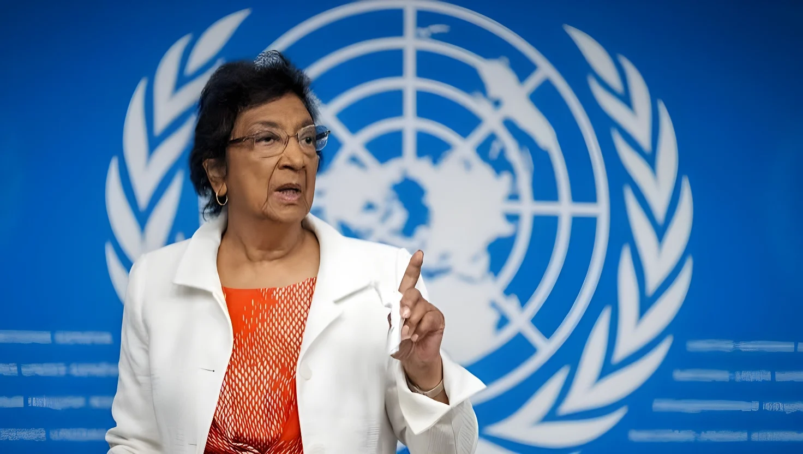

Le 9 octobre 2026, le Comité Nobel norvégien a attribué le prix Nobel de la paix à Navi Pillay, 85 ans, juriste sud-africaine, ancienne haute-commissaire de l'ONU aux droits de l'homme et ancienne présidente du Tribunal pénal international pour le Rwanda, « pour ses efforts en faveur de la promotion de la paix et du droit international ». Présidente de la commission de l'ONU qui a conclu à un génocide à Gaza, elle est saluée par l'ONU et l'Union européenne et dénoncée par Israël. Quelques heures plus tard, Washington a sanctionné la Cour pénale internationale en tant qu'institution.
Le vendredi 9 octobre 2026, le Comité Nobel norvégien, présidé par Jørgen Watne Frydnes, a attribué le prix Nobel de la paix à la juriste sud-africaine Navanethem « Navi » Pillay, « pour ses efforts en faveur de la promotion de la paix et du droit international ». Le comité a souligné son rôle moteur pour que les crimes de guerre, les crimes contre l'humanité et le génocide soient poursuivis, et son courage et son intégrité exceptionnels. La cérémonie de remise aura lieu à Oslo le 10 décembre 2026. Selon The Conversation, 287 candidatures avaient été enregistrées en 2026, 208 personnes et 79 organisations.
À 85 ans, Pillay est la cinquième personne sud-africaine à recevoir ce prix, et la première depuis Nelson Mandela et Frederik de Klerk en 1993.
| Lauréats sud-africains du Nobel de la paix | Année |
|---|---|
| Navi Pillay | 2026 |
| Nelson Mandela et Frederik de Klerk | 1993 |
| Desmond Tutu | 1984 |
| Albert Luthuli | 1960 |
Navi Pillay est née en 1941 à Durban, dans une famille d'origine indienne tamoule, dans un pays où la ségrégation raciale réglait la vie quotidienne. Diplômée en droit de l'université du Natal, elle ouvre en 1967 un cabinet, le premier tenu par une femme non blanche dans la province, et défend des militants anti-apartheid, parmi lesquels Phyllis Naidoo et Strini Moodley. En 1973, elle plaide dans une affaire qui a contribué à garantir des droits élémentaires, dont l'accès à un avocat, aux prisonniers politiques de Robben Island, où Nelson Mandela était détenu. En 1995, elle devient la première femme de couleur à siéger à la Haute Cour d'Afrique du Sud.
La même année 1995, elle entre au Tribunal pénal international pour le Rwanda (TPIR), qu'elle préside de 1999 à 2003. Le comité Nobel retient surtout son influence dans cette juridiction, où la jurisprudence a établi que le viol et les violences sexuelles peuvent constituer des crimes contre l'humanité et des actes de génocide, et où un accusé a été poursuivi pour incitation au génocide à partir de la seule diffusion de propagande. Elle rejoint ensuite la Cour pénale internationale en 2003, puis dirige le Haut-Commissariat des Nations unies aux droits de l'homme de septembre 2008 à août 2014. Elle a aussi siégé comme juge ad hoc à la Cour internationale de justice.
De 2021 à novembre 2025, elle préside la commission d'enquête internationale indépendante de l'ONU sur le territoire palestinien occupé, dont le rapport de septembre 2025 conclut qu'Israël commet un génocide à Gaza. Israël et les États-Unis ont rejeté ce rapport.
Annonce du prix Nobel de la paix ; sanctions américaines contre la CPI quelques heures plus tard.
Rapport de la commission d'enquête de l'ONU concluant à un génocide à Gaza.
Début de la présidence de la commission d'enquête sur le territoire palestinien occupé.
Haute-commissaire des Nations unies aux droits de l'homme.
Entrée à la Cour pénale internationale.
Présidence du Tribunal pénal international pour le Rwanda.
Première femme de couleur à la Haute Cour d'Afrique du Sud ; entrée au TPIR.
Plaidoirie pour les droits des prisonniers politiques de Robben Island.
Ouverture de son cabinet d'avocate à Durban.
Pour le comité, récompenser une personnalité dont toute l'œuvre porte sur la justice internationale est un message à l'adresse de ceux qui cherchent à affaiblir les institutions du droit international. The Conversation y voit le choix de la justice et de la responsabilité des États comme conditions d'une paix durable, et non seulement de l'arrêt des combats, dans un contexte de recul du multilatéralisme. Le secrétaire général de l'ONU, António Guterres, a salué « une voix de la justice constante et indépendante » et rappelé que l'état de droit doit l'emporter sur la force brute.
« Je dédie ce prix à toutes les victimes de crimes internationaux. »
— Navi Pillay, lauréate du prix Nobel de la paix 2026 (traduction)Le Haut-Commissaire aux droits de l'homme, Volker Türk, juge la distinction « amplement méritée », et la présidente de la Commission européenne, Ursula von der Leyen, a salué une défenseure des plus vulnérables, évoquant l'apartheid et le génocide rwandais. La France s'est félicitée de ce choix, tout comme l'Autorité palestinienne. À l'opposé, le ministre israélien des Affaires étrangères a estimé que le prix légitimait la haine anti-israélienne, et Benyamin Nétanyahou a accusé le comité d'avoir « perdu sa boussole morale ». Pillay a plaisanté qu'elle partagerait peut-être le prix avec Donald Trump, qui avait affirmé mercredi le mériter, avant de vouloir vérifier, en juriste, que la nouvelle était vraie. Dans un entretien d'octobre 2025, elle disait n'avoir jamais cru voir la fin de l'apartheid de son vivant, et attribuait les progrès des droits humains à la pression de la société civile plutôt qu'aux seuls gouvernements.
| Réaction | Position |
|---|---|
| António Guterres (ONU) | Salue une voix de la justice |
| Ursula von der Leyen (UE) | Salue une défenseure des plus vulnérables |
| Autorité palestinienne | Salue une carrière intègre |
| Benyamin Nétanyahou | « Boussole morale » perdue |
Le jour même, l'administration Trump a sanctionné pour la première fois la Cour pénale internationale en tant qu'institution, et non plus seulement certains de ses responsables. Le secrétaire d'État Marco Rubio l'a annoncé dans un message vidéo préenregistré : « Soit la CPI mettra fin à ses menaces, soit nous mettrons fin à la CPI. » Les sanctions bloquent les biens que la Cour détient aux États-Unis et interdisent de lui fournir des fonds, des biens ou des services, avec des exemptions temporaires pour la maintenance, la technologie et les retraites. Washington invoque l'enquête de la Cour en Afghanistan, qui pourrait viser du personnel américain, et ses mandats d'arrêt contre Benyamin Nétanyahou et l'ancien ministre de la Défense Yoav Gallant.
Le procureur adjoint, Nazhat Shameem Khan, a déclaré que ces mesures « doivent être condamnées », et la Cour a appelé les États membres à redoubler de soutien. Le juriste William Schabas relie le calendrier à la frustration de Trump envers le comité Nobel, une interprétation et non un fait établi. Les États-Unis et Israël ne sont pas parties au Statut de Rome, et en juillet, le Tchad et le Venezuela ont engagé leur retrait de la Cour, après le Burkina Faso, le Mali et le Niger.
En primant une juriste, le comité Nobel de 2026 renoue avec une idée classique de la paix : celle qui naît de la responsabilité et non de l'équilibre des puissances. Le choix est aussi un geste de défense d'institutions que la plus grande puissance du monde vient de sanctionner, ce qui donne à la décision une portée immédiate que peu de Nobel de la paix ont connue.
Mais ce pari a ses limites : un tribunal sans police dépend de la coopération des États, et ceux qui le rejettent, de Washington à plusieurs capitales africaines, se multiplient. La distinction consacre une carrière, elle ne protège pas les institutions qu'elle a servies.